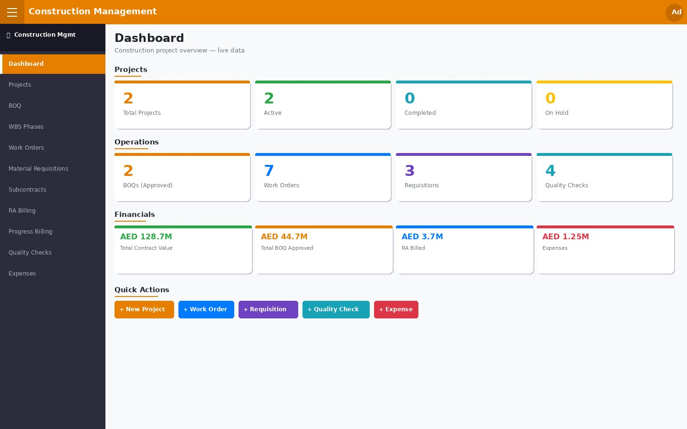
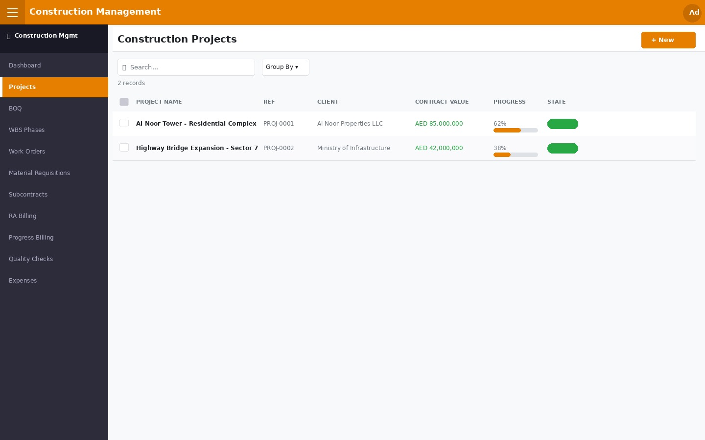
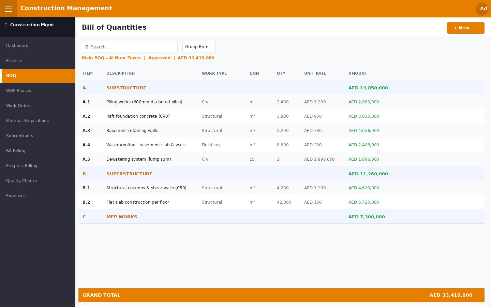
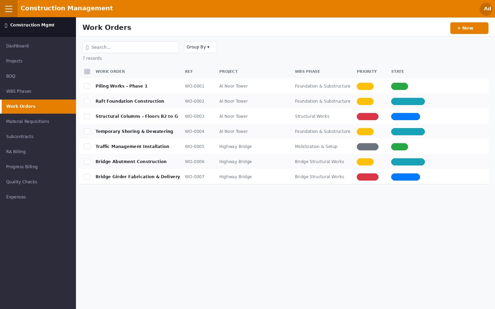
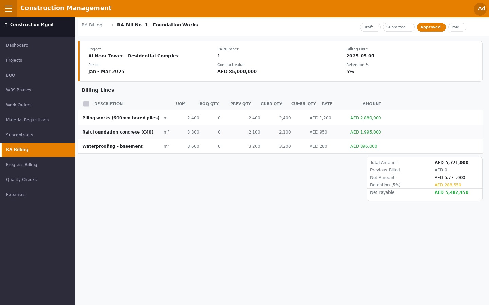
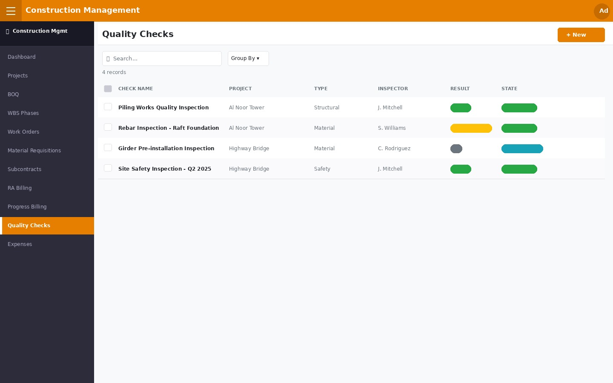
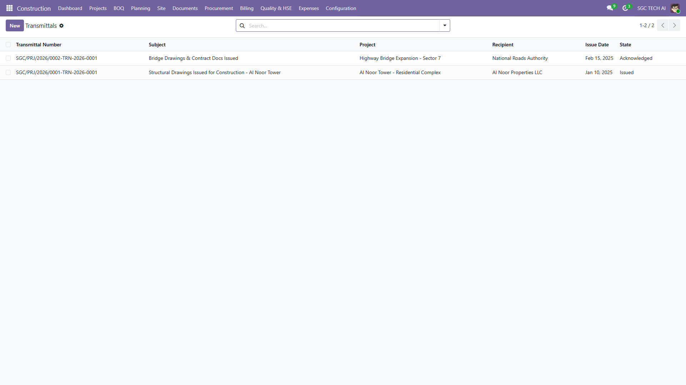
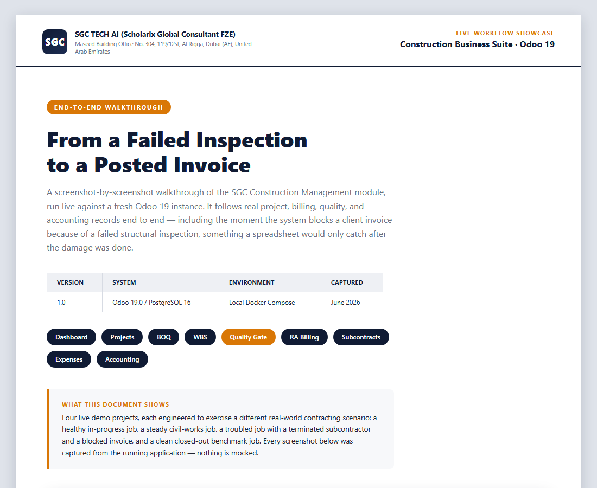

A complete construction project management system built natively inside Odoo 19. Manage BOQ, WBS phases, work orders, RA billing, material requisitions, subcontracting, quality checks, and expenses — all in one place.
SGC TECH AI · Clarity. Control. Confidence.
Real-time KPIs across all projects — total contract value, active BOQs, pending work orders, RA billing totals, expenses, and clickable quick-action buttons.

Fig. 1 — Live dashboard: 2 active projects · AED 128.7M total contract value · 2 BOQs approved · 7 work orders · 4 quality checks · financial KPIs
Central hub for every project — client, site/project manager, contract value, start and end dates, overall progress bar, and 8 smart-button shortcuts to all linked records (BOQ, WBS, Work Orders, Requisitions, Subcontracts, Billing, Quality, Expenses).

Fig. 2 — Projects list: Al Noor Tower – Residential Complex (AED 85M, 62% complete) and Highway Bridge Expansion (AED 42M, 38%) with inline progress bars
Detailed itemised BOQ with section headers, work-type classification (Civil, Structural, Electrical, MEP, Finishing, External), UOM, quantities, unit rates, and auto-computed line amounts. Full Draft → Approved → Revised approval flow with PDF export.

Fig. 3 — BOQ with section headers (Substructure AED 14.85M / Superstructure AED 11.26M / MEP AED 7.3M), item rates and grand total AED 33,410,000
Create and assign work orders to WBS phases with foreman, priority levels (Normal / High / Urgent), planned vs actual start/end dates, planned and actual cost tracking, and a full Draft → Confirmed → In Progress → Done workflow with linked material requisitions.

Fig. 4 — Work Orders: 7 orders across 2 projects with WBS phase, priority badges (Urgent / High / Normal) and state (Done / In Progress / Confirmed)
Industry-standard RA billing with cumulative quantity tracking (previous + current period), automatic retention deduction, net payable calculation, multi-period billing history, and Draft → Submitted → Approved → Paid status flow.

Fig. 5 — RA Bill form: cumulative qty per BOQ line · gross AED 5,771,000 · retention 5% (AED 288,550) · net payable AED 5,482,450 · Status: Approved
Structured QC inspections with 5 types (Material, Workmanship, Structural, Safety, Final), Pass / Fail / Conditional results, per-item checklists, corrective action notes, and full inspection history per work order.

Fig. 6 — Quality Checks: structural inspection (Pass), rebar inspection (Conditional Pass), girder check (In Progress), site safety audit (Pass)
Professional document transmittals with category-specific sequences (VO / RFI / NCR / DWG / SUB / IPC), revision tracking, delivery method, and status workflow.

Fig. 7 — Transmittals list with category indicators, reference numbers, and status tracking
Everything a construction company needs — from first estimate to final handover.
Full lifecycle with auto-reference (PROJ-0001), client, site manager, contract value, and 8 smart-button shortcuts to all related records.
Itemised BOQ with section headers, work types, UOM, unit rates and auto-computed amounts. Draft / Approved / Revised states with PDF export.
Hierarchical Work Breakdown Structure with parent/child phases, planned vs actual cost roll-up from work orders, and progress percentage.
Task-level work orders linked to WBS phases with foreman, priority, planned/actual dates, cost tracking, and material requisition linkage.
Product-catalogue integration with qty requested / approved / received tracking. Full Draft → Approved → Received workflow with cost estimation.
Subcontract records with scope of work, contract value, configurable retention %, amount paid vs remaining balance, and activation workflow.
Running Account billing with cumulative qty (previous + current), previous billing deduction, retention withholding, and net payable per bill.
Percentage-completion billing: enter % complete, auto-compute earned value, deduct previously billed, and get net amount this period.
5 inspection types, Pass/Fail/Conditional results, per-item checklists, corrective action tracking, and inspector assignment.
Categorised expenses (Materials, Labour, Equipment, Subcontract, Overhead) linked to WBS phases with approval workflow.
Live KPI dashboard built in Odoo's OWL framework — project counts, contract values, BOQ totals, billing, pending orders, and quick actions.
Professional printable BOQ report with project header, section grouping by work type, line-item detail, subtotals, and grand total footer.
A structured flow from project creation to client billing — all inside Odoo.
Set client, contract value & team
Itemise works, quantities & rates
Break project into phases
Assign tasks to foremen
Requisitions & subcontracts
Inspect & certify works
Bill client on certified qty
Complete walkthrough covering the full construction project lifecycle — from project creation and BOQ setup through work orders, quality inspections, RA billing, and financial closure. Each step is documented with real Odoo screens and sample data.

Fig. 8 — End-to-end workflow showcase: 22-step walkthrough covering projects, BOQ, WBS, work orders, requisitions, subcontracting, quality checks, RA billing, and financial close.
Five role levels ensure the right access for every team member.
| Technical Details | |
|---|---|
| Module Name | sgc_construction_management |
| Odoo Version | 19.0 |
| Version | 19.0.1.0.0 |
| Category | Construction |
| Dependencies | base mail product uom account report_xlsx |
| Models | 12 models across 9 Python files |
| Security Groups | 5 (User · Manager · Administrator · Project Manager · Finance) |
| Auto-Sequences | PROJ- · BOQ- · WO- · MR- · SC- · RAB- · PB- · QC- · EXP- |
| Frontend | OWL dashboard (Odoo Web Library) |
| Reports | PDF BOQ, IPC, SOA, WIP, VO Register, Profitability, XLSX WIP & RA Billing |
| Demo Data | 2 projects, 2 BOQs, 6 WBS phases, 7 work orders, 3 requisitions, 2 subcontracts, 1 RA bill, 4 quality checks, 5 expenses |
| License | OPL-1 |
Install the Construction Management module and take full control of your projects — from first estimate to final client handover.
Install Now on Odoo 19